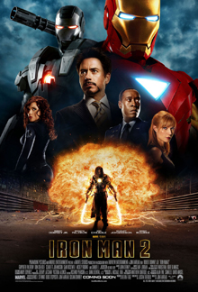
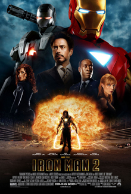

Iron Man
Black Panther is a fictional superhero appearing in American comic books published by Marvel Comics. The character was created by writer-editor Stan Lee and writer-artist Jack Kirby, first appearing in Fantastic Four #52 (cover-dated July 1966) in the Silver Age of Comic Books. Black Panther's real name is T'Challa, king and protector of the fictional African nation of Wakanda. Along with possessing enhanced abilities achieved through ancient Wakandan rituals of drinking the heart shaped herb, T'Challa also relies on his proficiency in science, rigorous physical training, hand-to-hand combat skills, and access to wealth and advanced technology to combat his enemies.
Black Panther is the first superhero of African descent in mainstream American comics, having debuted years before early African American superheroes such as Marvel Comics' the Falcon (1969), Luke Cage (1972) and Blade (1973), or DC Comics' John Stewart in the role of Green Lantern (1971). In one comic book storyline, the Black Panther mantle is handled by Kasper Cole, a multiracial New York City police officer. Beginning as an impersonator, Cole would later take on the moniker of White Tiger and become an ally to T'Challa. The role of Black Panther and leadership of Wakanda is also given to T'Challa's sister Shuri for a time when he is left recovering from critical injuries.
Black Panther has made numerous appearances in various television shows, animated films and video games. The character is portrayed in live action by Chadwick Boseman in the 2016 film Captain America: Civil War, and the 2018 film Black Panther, set in the Marvel Cinematic Universe. In 2011, Black Panther was ranked 51st overall on IGN's "Top 100 Comic Books Heroes" list.
The Black Panther's name predates the October 1966 founding of the Black Panther Party, though not the black panther logo of the party's predecessor, the Lowndes County Freedom Organization (LCFO), nor the segregated World War II Black Panthers Tank Battalion. Stan Lee, co-creator of the comic, denied that the comic was named after any of the political uses of the term "black panther", including the LCFO, citing "a strange coincidence". He is the first black superhero in American mainstream comic books; very few black heroes were created before him, and none with actual superpowers. These included the characters in the single-issue, low-distribution All-Negro Comics #1 (1947); Waku, Prince of the Bantu, who starred in his own feature in the omnibus title Jungle Tales, from Marvel's 1950s predecessor, Atlas Comics; and the Dell Comics Western character Lobo, the first black person to star in his own comic book. Previous non-caricatured black supporting characters in comics include U.S. Army infantry private Gabriel Jones of Sgt. Fury and his Howling Commandos.
In a guest appearance in Fantastic Four #119 (Feb. 1972), the Black Panther briefly tried using the name Black Leopard to avoid connotations with the Party, but the new name did not last. The character's name was changed back to Black Panther in Avengers #105, with T'Challa explaining that renaming himself made as much sense as altering the Scarlet Witch's name, and he is not a stereotype.
Co-creator Stan Lee recounted that the name was inspired by a pulp adventure hero who has a black panther as a helper. Jack Kirby's original concept art for Black Panther used the concept name Coal Tiger.